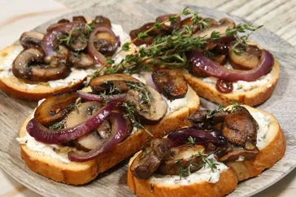

Mushroom Crostini with Herbed Goat Cheese

About
These mushroom crostini with herbed goat cheese pair buttery-thyme flavored mushrooms with a parsley and basil honey goat cheese, all on crispy crostini for a crunchy and savory, yet simple, appetizer.
Ingredients
1 Baguette
1 tbsp Olive Oil
4 ounces honey goat cheese, softened
1/2 tablespoon sherry
1/2 teaspoon dried parsley
1/2 teaspoon dried basil
1/2 teaspoon minced garlic
salt and freshly ground black pepper to taste
1/2 tablespoon olive oil
1/2 tablespoon unsalted butter
8 ounces baby bella or crimini mushrooms, sliced
1/2 small red onion, sliced
1 tablespoon low-sodium soy sauce
1/2 teaspoon dried thyme
1 sprig fresh thyme, or as needed (optional)
Instructions
Step 1
Preheat the oven to 425 degrees F, Line a baking sheet with parchment paper.
Step 2
Using a serrated knife, slice baguette into 1/2-inch-thick slices on an angle. Place slices on the prepared baking sheet; brush both sides lightly with olive oil. Bake until crisp and golden brown, 5 to 8 minutes; no need to flip.
Step 3
Mash goat cheese in a small bowl with a fork. Stir in sherry, parsley, basil, and garlic until well incorporated; season with salt and black pepper.
Step 4
Heat olive oil and butter In a skillet over medium heat. Add mushrooms and red onion, and cook, stirring occasionally, until mushrooms are golden and onions are soft and translucent, 6 to 8 minutes. Stir in soy sauce and thyme and cook until fragrant, 30 to 60 seconds. Season with salt and pepper.
Step 5
Spread goat cheese mixture on crostini, top with a spoonful of mushrooms and a sprinkle of thyme leaves, and serve at room temperature.
Back to main page